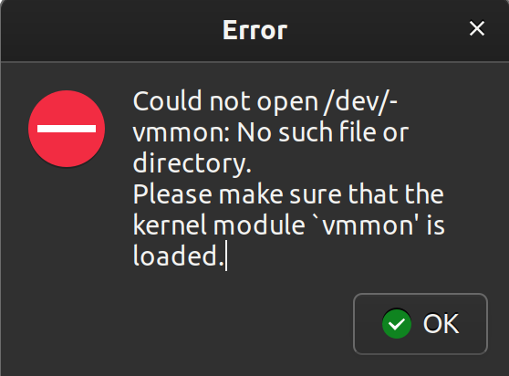

Next Section
Signing VMware modules
I use Kali-Linux-2021.4 as a virtual operating system on VMware Workstation Player 16. As I learned, there will be an issue booting Kali on VMWare Workstation Player 16 on a Linux host which boots from UEFI with secure boot enabled:
Launching VMWare Workstation Player 16 opens the following window:
Now, to launch Kali Linux inside the virtual machine, we double click on the "kali" icon on the left. The operating system begins to start up, but we quickly get an error:
On clicking "ok", a new error is displayed:

We click "ok" on this error dialogue, and then VMware immediately closes.
According to this post the issue is that on Linux hosts with secure boot enabled, unsigned drivers/modules cannot be loaded. Thus, the solution is to sign the drivers using keys generated by OpenSSL. Furthermore any time VMware updates, the updated modules need to be signed anew.
Since this signing of modules needs to be exectued somewhat regularly, I wrote a short Bash script (sign-modules.sh) for this purpose:
#!/bin/bash
# this script signs the modules needed to use VMWare Player 16
# following the steps at https://kb.vmware.com/s/article/2146460
# if not running as root, exit script and print error message
if (( $EUID != 0 )); then
echo "Error: Root permissions required---run as root."
exit
else
# date in MM-DD-YYYY format
d=`date +%m-%d-%Y`
# create name for directory and key files; move there
name=mok-$d
mkdir $name
cd $name
# generate keys using openssl
openssl req -new -x509 -newkey rsa:2048
-keyout $name.priv -outform DER -out $name.der
-nodes -days 36500 -subj "/CN=VMware/"
# sign module vmmon using generated keys
/usr/src/linux-headers-`uname -r`/scripts/sign-file sha256
./$name.priv ./$name.der $(modinfo -n vmmon)
# sign module vmnet using generated keys
/usr/src/linux-headers-`uname -r`/scripts/sign-file sha256
./$name.priv ./$name.der $(modinfo -n vmnet)
# import the keys to mokutil
# (you wil be prompted for a password for the MOK enrollment)
mokutil --import $name.der
# one last step: reboot and follow steps
# from UEFI prompt to complete MOK enrollment
reboot
fi
On running sign-modules.sh, we are prompted for a password for the MOK enrollment utility. After inputting the password, the host machine reboots. During reboot, we are directed to the MOK enrollment utility screen. We enroll the newly generated keys with MOK by supplying the password we set prior to reboot. When the host machine finishes rebooting, we fire up VMware and try again. Et voilà --- Kali Linux:
Code samples from this very website
I wrote this website from scratch using (mostly vanilla) HTML, CSS, and JavaScript. Originally I planned to use pure HTML and CSS. I realized pretty quickly however, that to implement the functionalities I wanted, pure HTML and CSS were insufficient. So in early Januaury 2022 I started learning JavaScript. (For this self-learning project, I followed W3Schools' tutorials for HTML, CSS, JavaScript, and jQuery, and also frequently consulted MDN Web Docs. )
Aside from a practical need, I believe that in order to break a system, it is important to first understand how the system was built and how it should function in the intended use case. Thus, given the extreme ubiquity of JavaScript across the web and in mobile applications, I think that it is valuable for an aspiring hacker to understand the basics of JavaScript from a development point of view.
Here I will show some code snippets which make this website behave as it does:
Top Button Bar
Each of the buttons in the "navigation bar" at the top of this page has a certain behavior when it is clicked, when a mouse enters it, and when a mouse leaves it. This website has three main pages:
Each of the top buttons has the same response to a click regardless of which of the above three pages the browser is pointed to.The same is not true for the mouse enter and mouse leave events. For example, the response to a mouse entering the "CYBER SECURITY" button depends on whether the browser is pointed to ./maths.html or ./cyber.html. I could have written a separate JavaScript file for each of the three main pages, but the mathematician in me prefers maximum generality and robustness. With the current code, it's easy to replace certain parameters in a single file (buttonProperties.js) for future development projects.
// colors (active/inactive)
const colors = {a: "var(--turq)", i: "white" };
// opacities (active/inactive)
const opacities = {a: "1", i: "0.6" };
// top button text (active/inactive)
const tText = {a: "RÉSUMÉ", i: "ANDREW W. HERRING, PH.D." };
// left button text (active/inactive)
const lText = {a: "MATHEMATICS", i: "MATH(S)" };
// right button text (active/inactive)
const rText = {a: "CYBER SECURITY", i: "CYBER" };
// create an object of objects with all of the button texts
const buttonsText = {};
buttonsText.tbttn = tText;
buttonsText.lbttn = lText;
buttonsText.rbttn = rText;
// array of all button ids
buttonIds = Object.getOwnPropertyNames(buttonsText);
// create an object with paths for click events
// (likely will have to change this once uploaded)
const buttonClickPaths = {};
buttonClickPaths.tbttn = '/home/andrew/Documents/
website2/files/resume.pdf';
buttonClickPaths.lbttn = '/home/andrew/Documents/
website2/maths/maths.html';
buttonClickPaths.rbttn = '/home/andrew/Documents/
website2/cyber/cyber.html';
$(document).ready(function(){
// ******************************************************************
// **********WHEN BROWSER IS POINTED TO INDEX.HTML*******************
// ******************************************************************
if (location.pathname == '/home/andrew/Documents/
website2/index.html'){
// set the current button to top button
const currentButton = "tbttn";
// proper format for jQuery selector
const cB = "#" + currentButton;
// duplicate the array buttonIds (from buttonProperties.js)
const nonCurrentButtons = [];
for (i=0; i < buttonIds.length; i++){
nonCurrentButtons[i] = buttonIds[i]
};
// then remove the current button to obtain nonCurrentButtons
for (i=0; i < nonCurrentButtons.length; i++){
if ( nonCurrentButtons[i] == currentButton ) {
nonCurrentButtons.splice(i,1);
};
};
// set text for current button
$(cB).text(buttonsText[currentButton].i);
// current button event handlers
$(cB).on({
click: () => {
location.assign(buttonClickPaths[currentButton]);
},
mouseenter: () => {
$(cB).css({"color":colors.a }).html(buttonsText[currentButton].a);
},
mouseleave: () => {
$(cB).css({"color":colors.i}).html(buttonsText[currentButton].i);
}
});
// loop over non-current buttons
for (let b of nonCurrentButtons){
// proper format for jQuery selector
const nCB = "#" + b;
// set text for non-current buttons
$(nCB).text(buttonsText[b].i);
// non-current button event handlers
$(nCB).on({
click: () => {
location.assign(buttonClickPaths[b]);
},
mouseenter: () => {
$(nCB).css({"color":colors.a, "opacity":opacities.a })
.html(buttonsText[b].a);
},
mouseleave: () => {
$(nCB).css({"color":colors.i, "opacity":opacities.i })
.html(buttonsText[b].i);
}
});
};
}
// ******************************************************************
// **********WHEN BROWSER IS POINTED TO MATHS.HTML*******************
// ******************************************************************
else if (location.pathname == '/home/andrew/Documents/
website2/maths/maths.html'){
// set the current button to left button
const currentButton = "lbttn";
// proper format for jQuery selector
const cB = "#" + currentButton;
// set text for current button
$(cB).text(buttonsText[currentButton].a);
// duplicate the array buttonIds
const nonCurrentButtons = [];
for (i=0; i < buttonIds.length; i++){
nonCurrentButtons[i] = buttonIds[i]
};
// then remove the current button to obtain nonCurrentButtons
for (i=0; i < nonCurrentButtons.length; i++){
if ( nonCurrentButtons[i] == currentButton ) {
nonCurrentButtons.splice(i,1);
}
};
// loop over non-current buttons
for (let b of nonCurrentButtons){
// proper format for jQuery selector
const nCB = "#" + b;
// set text for non-current buttons
$(nCB).text(buttonsText[b].i);
// all button event handlers
$(nCB).on({
click: () => {
location.assign(buttonClickPaths[b]);
},
mouseenter: () => {
$(nCB).css({"color":colors.a, "opacity":opacities.a })
.html(buttonsText[b].a);
$(cB).css({"color":colors.i, "opacity":opacities.i });
},
mouseleave: () => {
$(nCB).css({"color":colors.i, "opacity":opacities.i })
.html(buttonsText[b].i);
$(cB).css({"color":colors.a, "opacity":opacities.a })
.html(buttonsText[currentButton].a);
}
});
};
}
// ******************************************************************
// **********WHEN BROWSER IS POINTED TO CYBER.HTML*******************
// ******************************************************************
else if (location.pathname == '/home/andrew/Documents/
website2/cyber/cyber.html'){
// set the current button to right button
const currentButton = "rbttn";
// proper format for jQuery selector
const cB = "#" + currentButton;
// set text for current button
$(cB).text(buttonsText[currentButton].a);
// duplicate the array buttonIds
const nonCurrentButtons = [];
for (i=0; i < buttonIds.length; i++){
nonCurrentButtons[i] = buttonIds[i]
};
// then remove the current button to obtain nonCurrentButtons
for (i=0; i < nonCurrentButtons.length; i++){
if ( nonCurrentButtons[i] == currentButton ) {
nonCurrentButtons.splice(i,1);
}
};
// loop over non-current buttons
for (let b of nonCurrentButtons){
// proper format for jQuery selector
const nCB = "#" + b;
// set text for non-current buttons
$(nCB).text(buttonsText[b].i);
// all button event handlers
$(nCB).on({
click: () => {
location.assign(buttonClickPaths[b]);
},
mouseenter: () => {
$(nCB).css({"color":colors.a, "opacity":opacities.a })
.html(buttonsText[b].a);
$(cB).css({"color":colors.i, "opacity":opacities.i });
},
mouseleave: () => {
$(nCB).css({"color":colors.i, "opacity":opacities.i })
.html(buttonsText[b].i);
$(cB).css({"color":colors.a, "opacity":opacities.a })
.html(buttonsText[currentButton].a);
}
});
};
}
});
:root {
/* turquoise */
--turq: rgb(0, 204, 241);
}
.buttonbar{
border: solid 2px black;
width:95%;
height: 20vw;
display: block;
margin-left: auto;
margin-right: auto
}
.tbutton{
background: url("./images/big-vee-gray.jpg") center center;
opacity: 0.6;
background-size: 70%;
border: none;
color: white;
padding: 0px 0px 0px 0px;
text-align: center;
text-decoration: none;
display: block;
margin: 0px 0px 0px 0px;
cursor: pointer;
font-size: 6vw;
width: 100%;
height: 15vw;
}
.lbutton{
background: url("./images/web-math-dark.png") center center;
opacity: 0.6;
background-size: 50%;
border: none;
color: white;
padding: 0px 0px 0px 0px;
text-align: center;
text-decoration: none;
display: block;
margin: 0px 0px 0px 0px;
cursor: pointer;
font-size: 3.5vw;
width: 50%;
height: 5vw;
float: left;
}
.rbutton{
background: url("./images/hashcat-gray.png") top center;
opacity: 1;
background-size: 100%;
border: none;
color: var(--turq);
padding: 0px 0px 0px 0px;
text-align: center;
text-decoration: none;
display: block;
margin: 0px 0px 0px 0px;
cursor: pointer;
font-size: 3.5vw;
width: 50%;
height: 5vw;
}
<!-- ******************************************** -->
<!-- button bar -->
<!-- ******************************************** -->
<div class="buttonbar">
<!-- top button -->
<button id="tbttn" class="tbutton">
</button>
<!-- left button -->
<button id="lbttn" class="lbutton">
</button>
<!-- right button -->
<button id="rbttn" class="rbutton">
</button>
</div>
Reveal Boxes
Each post in this section is presented in a "reveal box". Each reveal box consists of a title bar which, once clicked, displays a panel containing the content of the post. In the language of CSS, the tite bars are elements of the class p.flip and the content panel of each post is an element with class div.panel.
const panels = [];
const flips = [];
const revealBoxes = [];
// find the number of posts = number of revealboxes
// = number of panels = number of flips
const numPosts = $(".panel").length;
// create arrays of ids for reveal boxes, panels, and flips
for ( i=0; i < numPosts; i++ ){
panels[i] = $(".panel")[i].id;
flips[i] = $(".flip")[i].id;
revealBoxes[i] = $(".revealbox")[i].id;
};
const posts= {};
// create an object (posts) whose properties are
// ids of revealboxes, and for a given property x,
// posts.x is an array of ids for the respective
// flip and panel elements which are chidlren of
// revealbox x
for (i=0; i < numPosts ; i++){
posts[revealBoxes[i]]=[flips[i], panels[i]];
};
// for each post,
for (let p in posts){
// string formatting ids of (child)
// flips and panels for jQuery
const jqf = "#" + posts[p][0];
const jqp = "#" + posts[p][1];
// click on (child) flip to toggle (child) panel
$(jqf).click( () => {
$(jqp).toggle();
});
};
div.panel, p.flip{
line-height: 1.5;
margin:auto;
padding:5px;
text-align:center;
border:solid 1.5px var(--turq);
color:white;
border-radius:3px;
}
div.panel{
display:none;
background:black;
font-size:16px;
text-align: left;
padding:12px;
}
p.flip{
cursor:pointer;
background:black;
font-size: 24px;
}
div.panel p{
text-indent: 2.5%;
}
div.panel a:link{
color: white;
}
div.panel a:visited{
color: white;
}
div.panel a:hover{
color: var(--turq);
}
div.revealbox{
content: " ";
display: block;
width: 100%;
margin-bottom: 20px;
}
div.rbdate{
font-size: 1.5vw;
text-align: right;
padding-right: 10px;
}
<div id="shadow" class="revealbox">
<p id="fshadow" class="flip">Understanding
<code class=il>/etc/shadow</code></p>
<div id="pshadow" class="panel">
<div class="rbdate"><i>8 December, 2021</i></div>
<!-- content goes here -->
</div>
</div>
Code Screens
I also wrote the JavaScript to generate the "tabbed code screens" used in this post for displaying source code in the browser. To make the code pretty, I used highlight.js with the theme styles/monokai-sublime.min.css styled after the Monokai color scheme for Sublime Text 3.
$(document).ready(function(){
// set current and non-current button colors
const buttonColors = {};
buttonColors.c = "var( --code-gray )";
buttonColors.nc = "var( --st3-blck )";
// number of code screen objects
const numCodeScreens = $(".btn-group").length;
// for each code screen object
for (i=0; i < numCodeScreens; i++){
// find the nav buttons for that code screen object
const navButtons = $(".btn-group")[i]
.children;
// find the number of nav buttons for that code screen object
const numButtons = navButtons.length;
// array of ids of nav buttons for that code screen object
const navButtonIds = [];
for (j=0; j < numButtons; j++){
navButtonIds[j] = "#" + navButtons[j].id;
};
// set the first nav button to have the "current" color
$(navButtonIds[0]).css("background-color",
buttonColors.c);
// create an object with properties nav button ids,
// and whose value for a given property is the id
// of the corresponding code screen
const codeContentIds = {};
for ( let b of navButtonIds ){
codeContentIds[b] = b.replace("bttn","scr");
};
// set default behavior for each code screen
// object: all code screens but the first
// are hidden by default
for (k=1; k < numButtons; k++){
$(codeContentIds[navButtonIds[k]]).hide();
};
// define the click actions
for ( let bb of navButtonIds ){
$(bb).click( () => {
// click on a nav button to show the corresponding
// code screen, and then set the clicked button to have
// "current" color
$(codeContentIds[bb]).show();
$(bb).css("background-color", buttonColors.c);
// for each button which was NOT clicked, hide the
// corresponding code screen, and set the background
// color of that button to "non-current"
for ( let bbp of navButtonIds ){
if ( !( bbp == bb ) ){
$(codeContentIds[bbp]).hide();
$(bbp).css("background-color", buttonColors.nc);
}
}
})
};
};
});
:root {
/* turquoise */
--turq: rgb(0, 204, 241);
/* Sublime Text 3 Monokai background black*/
--st3-blck: #282923;
/* a nice gray */
--code-gray: #696969;
}
pre.codescreen{
border: 3px solid var( --code-gray );
border-radius: 3px;
margin: 0;
clear: both;
}
.btn-group button {
background-color: var( --st3-blck );
border: none;
color: white;
text-align: center;
text-decoration: none;
display: inline-block;
font-size: 16px;
cursor: pointer;
float: left;
border: 1px solid black;
border-radius: 3px;
width:auto;
}
<!DOCTYPE html>
<html lang="en-US">
<head>
<!-- import highlight.js and the
corresponding Monokai style sheet from a cdn -->
<link rel="stylesheet"
href="https://cdn.jsdelivr.net/gh/
highlightjs/cdn-release@11.4.0/build/styles/monokai-sublime.min.css">
<script src="https://cdn.jsdelivr.net/gh/
highlightjs/cdn-release@11.4.0/build/highlight.min.js"></script>
<!-- highlight.js will automatically perform
syntax highlighting on any code wrapped in <pre><code> tags -->
<script>hljs.highlightAll();</script>
</head>
<body>
<!-- ******************************************** -->
<!-- top bar code screeens nav -->
<!-- ******************************************** -->
<div id="csnavTB" class="btn-group">
<button id="csTBbttn0">buttonProperties.js</button>
<button id="csTBbttn1">buttonActions.js</button>
<button id="csTBbttn2">cyber.css</button>
<button id="csTBbttn3">cyber.html</button>
</div>
<!-- ******************************************** -->
<!-- buttonProperties.js -->
<!-- ******************************************** -->
<pre class="codescreen" id="csTBscr0"><code class="javascript">
<!-- JavaScript to be displayed with syntax highlighting -->
</code></pre>
Understanding /etc/shadow
On linux machines, hashes of user passwords are stored in the file /etc/shadow
andrew:~$ ls -l /etc/ | grep "shadow" -rw-r----- 1 root shadow 914 Dec 31 15:06 gshadow -rw-r----- 1 root shadow 904 Dec 15 10:57 gshadow- -rw-r----- 1 root shadow 1699 Dec 31 18:01 shadow -rw-r----- 1 root shadow 1462 May 3 2021 shadow- andrew:~$
We see above that /etc/shadow has permission level 640 and is owned by root, so that only sudoers have read/write permissions.
It is worth understanding how an entry of /etc/shadow is formatted since quite a bit of useful information can be extracted from a single such entry. Here is an entry of /etc/shadow for the user randy. (Actually the entry has been truncated for readability).
andrew:~$ sudo cat /etc/shadow | grep "randy" randy:$6$lqp1...:18992:0:99999:7::: andrew:~$
Each entry consists of nine fields separated by the colon (:) as a delimiter:
- The first field specifies the username:
(For this example, the username is
andrew:~$ sudo cat /etc/shadow | grep "randy" | cut -d ":" -f 1 randy andrew:~$
randy.) - The second field contains hash information about the plain text password for the user in question:
(Here again we have truncated for easier reading).
andrew:~$ sudo cat /etc/shadow | grep "randy" | cut -d ":" -f 2 $6$lqp1kwZ2pD2x0z35$3I2n...KbyS.SXxVOllcrFHLYFJX1 andrew:~$
This second field can be further decomposed into three subfields delimited by "dollar signs" ($). A generic such second field has the form
$id$salt$hashed.The first two subfields (
Returning to our example, we see that the hashing algorithm used is$idand$salt) tell us how the third subfield ($hashed) is computed from the plaintext password. More precisely,$idindicates the particular hashing algorithm used, and$saltcontains information about any salt fed into that hashing algorithm in order to obtain$hashed. While there are tons of hashing algorithms available (each with a unique$id), some of the most commonly used include:$6, or SHA-512. (This has been the default hashing algorithm used by Ubuntu distributions for some time now).
From the point of view of a hacker, the remaining seven fields in an entry of /etc/shadow are less relevant than the first two: they contain metadata such as when the password was created, and when it must be changed. One of the popular utilities for cracking password hashes is hashcat. At the most basic level hashcat wants to know the hashing algorithm used (for example, starting a call with hashcat -m 0 tells hashcat that the hash was computed using MD5), and then the hash itself together with any salt. We will have much more to say about hashcat in a future post; for now we will finish with two quick notes:
- Beginning with releases 2021.1+, Kali Linux started using yescrypt (
$y) as the default hashing algorithm for populating/etc/shadow. It is worth mentioning that at this time,hashcatdoes not support cracking hashes computed by yescrypt. - For the purpose of testing
hashcat, it would be handy to be able to generate$salt$hashedstrings (just as they would appear in/etc/shadow) from arbitrary plain text passwords. While this can be done by creating new system users with those specific passwords, a much easier way is to use the utilitymkpasswd.
Linux file permissions
To meaningfully work with linux machines, a user needs to understand linux file permissions and how to manipulate them. Here are some basic notes I made on the topic.